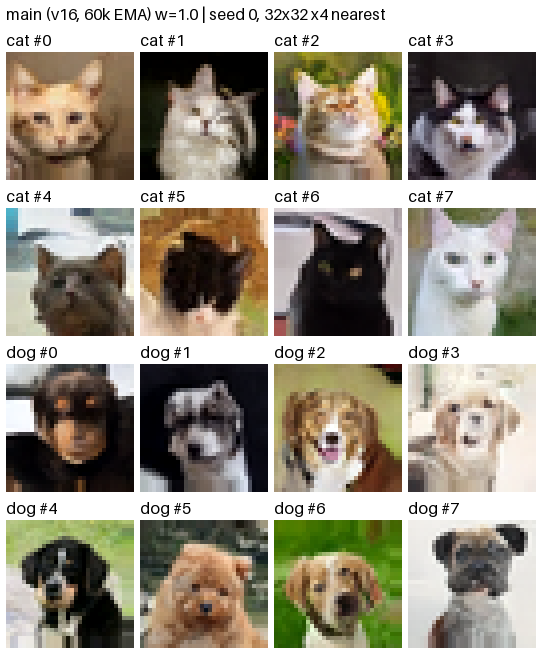
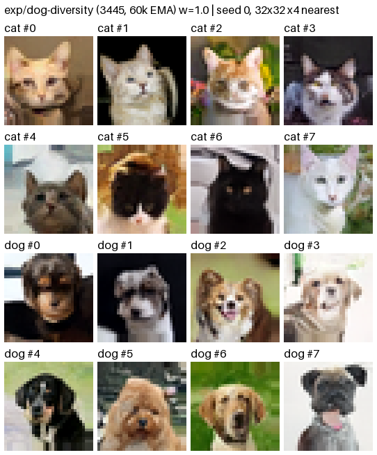
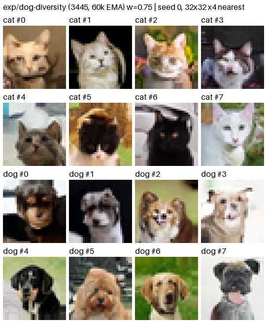
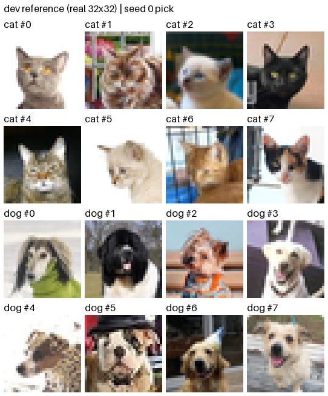

Same seed, same labels — three configs side by side
seed 0, labels = 8 cat + 8 dog in every column. Images are the true 32×32 samples, upscaled ×4 nearest-neighbour (no smoothing invented). No inference runs in this page.




Observed at this seed
Official evaluator, cuda, same dev reference
Equal-step control (40k, 1000/class): the data variable alone
FID/recall depend on sample size; compare only within one protocol. Guidance window on the branch at 1000/class: w=0.7→15, 0.75→15, 0.8→14, 0.9→14, 1.0→14.
What changed in the training set
File-level diff (main → exp/dog-diversity)
- manifest.csv: +1,089 dog rows (v16 rows kept verbatim, first 2,356 identical)
- weights.pt: 60k EMA retrained on the 3,445-row manifest (same architecture, 9,628,419 params)
- sampling.json: guidance 1.0 → 0.75
- audit: 200-row draw re-run on the new manifest (student labels gate the switch)
Branch commits
Live generation — the model runs in your browser
ONNX export of the same UNet (9.6M params), Heun 18 steps + CFG reimplemented in JavaScript (demo/live/sampler.js), onnxruntime-web with WebGPU or WASM fallback. Weights download once (38.7 MB per model, then cached). Initial noise uses a browser PRNG, so live images differ from the torch-seeded static grids but follow the same distribution. TA ruling 2026-11-19: public hosting allowed; do not hand code/weights directly to classmates.
idle — press Generate (first load downloads the model).